충남대학교 컴퓨터공학과 조은선 교수님의 "컴파일러 개론" 강의를 필기한 내용입니다.
다소 잘못된 내용과 구어적 표현 이 포함되어 있을 수 있습니다.
LR Parsing table
- 일단 파싱 테이블을 만드는 과정을 다시 정리하면
- 파서 상태가 될 수 있는 후보들 선정 - LR(0), Closure을 이용
- 파서 상태들 간의 Deterministic Finite Automata 정의
- 파싱 테이블로 변환
파싱 테이블을 만드는데 알아야 할 개념들
LR(0) 아이템
- 얘는 생성규칙의 RHS에 찍을 수 있는 모든 곳에 점을 찍은 생성규칙을 의미한다
- 예시로 보는게 더 빠름
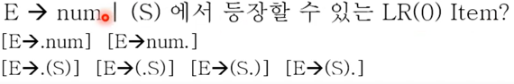
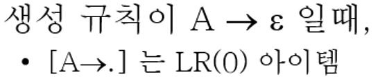
- 뭔지 알것제?
Closure
- 얘는 LR(0)아이템 집합을 인자로 받아 원소의 갯수가 더 불어난(혹은 동일할수도 있음) LR(0)아이템 집합을 반환하는 함수이다
- 일단 작동방식은 다음과 같다
- 하나의 LR(0)아이템에 대해 점(.)뒤에 있는 놈이 Terminal이면 자기자신이 전부임
- 하나의 LR(0) 아이템에 대해 점(.)뒤에 있는 놈이 Non-terminal이면 그 뒤에 있는 Non-terminal을 LHS로 하는 모든 생성규칙들도 포함하되 각각의 가져온 생성규칙 맨앞에 점(.)을 찍어준다. 그리고 새로이 포함된 모든 생성규칙들에 대해서도 Closure연산을 재귀적으로 돌려준다
- 이짓을 집합내에 있는 모든 LR(0) 아이템에게 반복한다
- 예시 보면서 하자
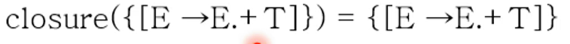
- 점(.) 뒤에 Terminal이 있으면 걍 암것도 안하고 반환한다.
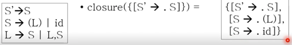
- 점(.)뒤에 S가 있으므로 S → (L)와 S → id를 추가하되 앞에 점을 찍어 S → .(L)와 S → .id를 추가한다. 그리고 추가한 원수들에 대해서도 closure를 해보지만 .뒤에가 터미널이므로 이게 전부임
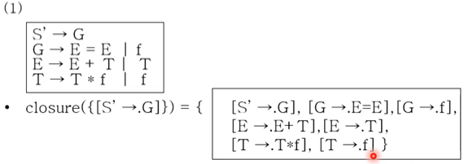
- 결과를 보고 얘기를 하면
- 먼저
[S’ → .G]는 자기자신이고 [G → .E=E]와[G → f]는 자기자신의 점 뒤에 G가 있었기 때문에 추가된거고[E → .E+T]와[E → .T]는[G → .E=E]에서 점 뒤에 E가 있었기 때문이고[T → .T*f]와[T → .f]는[E → .T]에서 점 뒤에 T가 있었기 때문이다.
- 먼저
Goto
- goto(A, B) 에서 일단 A는 LR(0)아이템 집합을 의미하고 A의 원소 중 점 뒤에 나왔으면 하는 심벌이다
- 그리고 이것의 연산은 다음의 단계를 거친다.
- 일단 집합 A에서 RHS에 “.B”가 등장하는 애들을 다 긁어모은다
- 그리고 걔네들의 “.B”를 전부 “B.”으로 바꿔준다.
- 그리고 얘네들을 Closure연산한다.
- 즉, A의 원소들 중 B바로 앞에 있어서 B뒤로 건너갈 수 있는 놈들을 다 건너보내고 closure하는 것이다
- 당연한얘기지만 A → null의 LR(0)의 goto는 없다
- 예시봐라
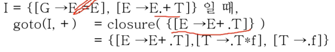
- 일단 .+가 나오는 놈이 I에서는
[E → E.+T]하나밖에 없기 때문에 이놈을[E → E+.T]로 바꿔준다 - 그리고 이넘을 closure을 해주면 됨
- 결과가 저모양인 이유는 사실 이 예제가 Closure에서의 마지막 예시 연장선이기 때문임
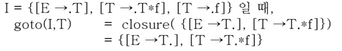
- .T가 나오는게
[E → .T],[T → .T*f]이기 때문에 이 둘을 [E → T.],[T → T.*f]로 바꿔주고- 얘네들을 closure해주면 어차피 .뒤에게 터미널이니까 그대로 나온다.
- 하나의 꿀팁은 논터미널 뒤에는 터미널이 나올 가능성이 높으니까 논터미널을 건너가는 goto의 경우에는 closure을 취해도 그대로 나오는 경우가 많고, 터미널 뒤에는 논터미널이 나올 가능성이 높으므로 closure연산을 추가적으로 해줘야 한다
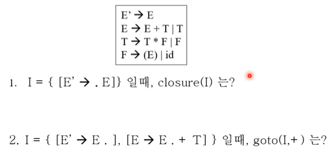
- 직접해봐라
상태전이도
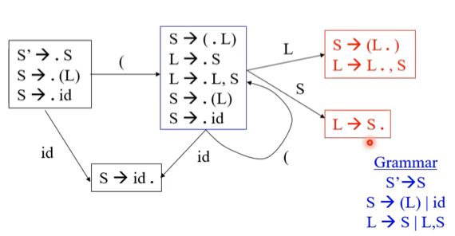
- 보면 일단 네모박스가 LR(0)아이템 집합이고 화살표가 해당 집합에서의 goto를 했을때 결과 집합을 연결해주게 된다
- 뭐 하나씩 보면 별로 어려울 건 없고
- 오른쪽 집합에서 goto(오른쪽집합, ‘(‘)를 해주면 그의 결과가 오른쪽 집합으로 동일하게 나오기 때문에 환형으로 그려져있는 거심
- 모든 심벌에 대한 goto가 표현되어있으므로 끝난거임 - 이거 그릴줄 알아야 한다
각각의 의미
- 일단 LR(0)아이템에서의 점은 약간 포인터임 - 이 앞까지는 처리를 끝냈고 점 뒤에 있는놈(마크심벌이라고 하더라)이 나오기를 기대하고 있는 거다
- 그리고 어떤 LR(0)아이템에 대해 Closure은 점 뒤에 나올 수 있는 모든 가능성(심벌)을 전부 계산하는 것이라고 생각할 수 있다
파싱 테이블 만들기
Item 분류
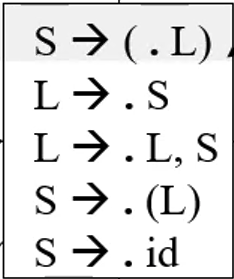
- 위의 예제에서 볼 수 있듯이 맨 위의 아이템은 점이 이동한 직후의 item이고 이걸 kernel item 이라고 부른다
- 그리고 그 아래에 있는 것들은 kernel item을 closure해서 나온 것이므로 closure item 이라고 한다
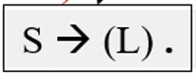
- 또한 이놈처럼 점이 맨 뒤에 있어 더이상 goto를 하지 못하고 전부 다 처리를 한 생태를 reduce item이라고 한다.
상태 정의
- 일단 생성규칙
[S’ → S]를 추가한다 - Augmented Grammar라고 불림 - 그리고 시작 상태는
closure([S’ → .S])이다- 의미를 생각해보면 아직 아무것도 들어온게 없는 상태인거고, 이제 S뿐 아니라 S다 대체될 수 있는 모든 애들이 뒤이어 나올 수 있는 상태가 시작 상태가 되는 것이다
- 이 시작상태에서 goto를 하게 되면 그 다음 상태들이 나오게 되는 것임
- 그 다음 상태들을 C0라고 하는데 이놈의 정의는 모든 타당한 LR(0)에 대해 goto를 적용하여 얻어낼 수 있는 모든 LR(0)아이템 집합을 의미한다
- 또한 상태들을 막 거쳐서 결과적으로
[S’ → S.]이 되면 accept가 되는 것이다- 이 말뜻이 약간 헷갈릴 수 있는데 막 goto를 하다가 .이 맨 뒤에 갔을 때 .앞에 있는 것들이 S로 Reduce되면 S.가 되고 그때 accept가 되는 것이다
- 근데 아직도 뭔소린지 잘 감이 안오긴함 이건
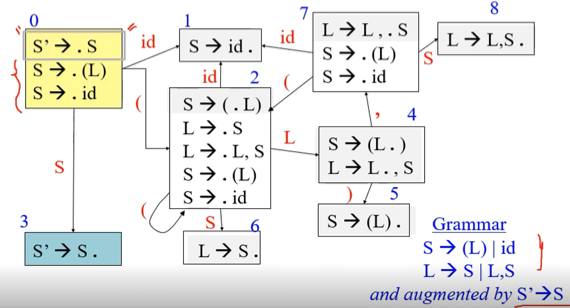
- 그래서 그림으로 그려보면 위처럼 된다
- Augment grammar와 그것의 closure가 시작상태(0)가 되고
- 여기에서 goto를 ㅈㄴ게 한 상태들이 회색으로 표현된 곳 이고
- 마지막으로 시작상태에서 goto(시작상태, S)를 하게 되면 (3)번 상태가 되며 accept가 된다
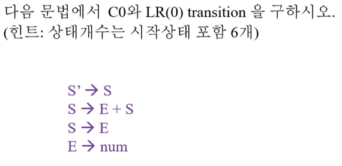
- 해봐라
- Augment grammar추가하기, goto 빼먹지 않기, closure item 빼먹지 않기, 중복된 아이템 집합 만들지 않기 - 실수하지마셈
테이블로 만들기
- 아래의 규칙을 잘 지키면서 해라
- 터미널을 건너가는 goto는 shift로 바꾸고
- 논터미널을 건너가는 goto는 goto로 하고
- 시작심벌이 아닌 심벌 뒤에 점이 있고 그게 마지막이라면 그 행 전체를 reduce로 하고
- 시작심벌 뒤에 점이 있고 그게 마지막이면 accept로 하면 된다
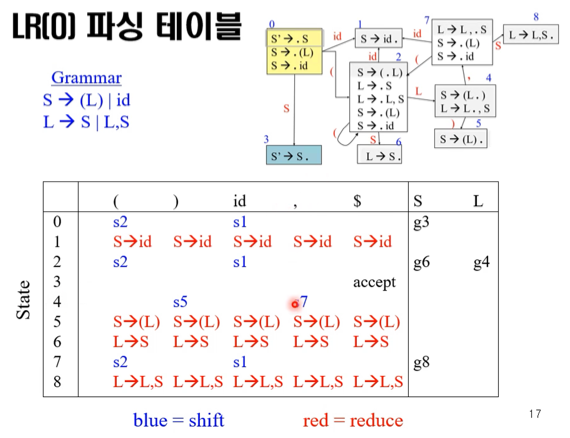
- 이래 하면 된다 - 직접 해보기!
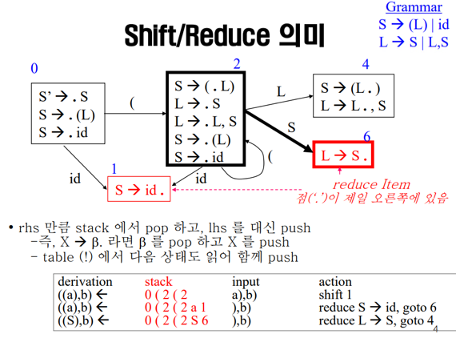
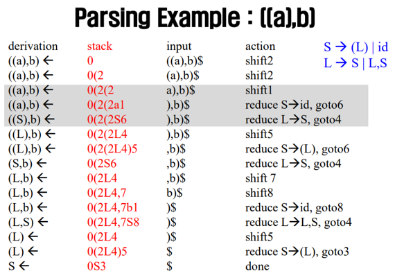
- 생성규칙에서 아이템과 goto만들고 그림 그려서 파싱 테이블 만든 후, 파싱 화정 따라가는거 시험공부를 위해 반복하라
SLR 파싱
- 얘는 LR(0)와 나머지는 다 똑같고 하나만 다르게 해줌으로써 파싱의 범위를 많이 늘린 파싱 기법이다
- 일단 LR(0)의 문제점은 reduce의 경우에 한 행 전체를 생성규칙으로 도배를 했고 따라서 별 문제가 없어보이는 문법도 테이블의 한 셀에 액션이 두개가 들어가는 모호한 경우가 생기게 됨
- 따라서 Simple LR(SLR) 의 경우에는 도배를 하는게 아니고 reduce item인 경우에는 follow를 구하고, follow의 원소가 등장한 경우에만 reduce를 하게 하는 방식이다
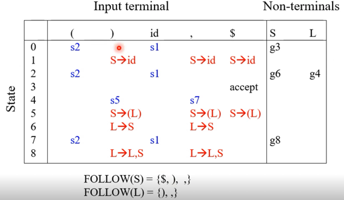
- 결과적으로 위의 예시는 다음과 같이 reduce의 갯수가 많이 줄어들고, 액션이 겹치는 모호한 경우가 발생하지 않더라